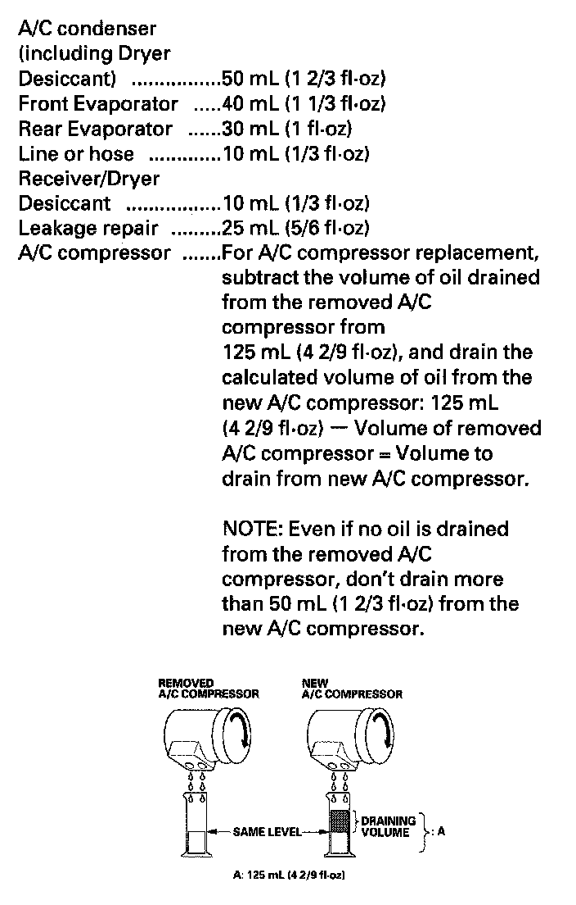

A/C Refrigerant Oil Replacement
A/C Refrigerant Oil ReplacementRecommended PAG oil: DENSO ND-OIL 8
- P/N 38897-PR7-A01AH: 120 mL (4 fl-oz)
- P/N 38899-PR7-A01: 40 mL (1 1/3 fl-oz)

Add the recommended refrigerant oil in the amount listed if you replace any of the following parts.
- To avoid contamination, do not return the oil to the container once dispensed, and never mix it with other refrigerant oils.
- Immediately after using the oil, reinstall the cap on the container, and seal it to avoid moisture absorption.
- Do not spill the refrigerant oil on the vehicle; it may damage the paint; if it gets on the paint, wash it off immediately.